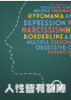

豆瓣
读书
电影
音乐
同城
小组
阅读
FM
东西
集市
更多
下载豆瓣客户端
提醒
豆邮
此去经年的账号
个人主页
我的订单
我的钱包
账号管理
退出
首页
我的豆瓣
豆瓣音乐
移动应用
游戏
线上活动
说句话
发照片
推荐网页
写日记
发布东西
首页设置
新京报书评周刊
的日记:
新女性的时代表情：永远不安，永远不甘
这个时代的都市新女性有很多张脸。甚至不必去香港言情里找“亦舒女郎”， 《我的前半生》里的子君和唐晶也不过是千万个试图在平庸泥沼里突围的女性代表。 事实上，从有“都市女性”这个概念起...
17分钟，来自 热门精选
后小井postwell
的日记:
“西安有没有海？”
苏越死了。消息称他是意外坠楼，更亲密的朋友都相信是自杀。 无论如何，苏越死了。让安弟无法接受的是，他就死在她的故乡，在海南岛东南岸，一栋漂亮的海景房。 售楼处的经理悄悄告诉她，每年...
昨天，来自 美食
西西里呀
的小组话题:
如何让妈妈更轻松点——一个爸爸的个人体会
友邻史努比写了篇日记《如何让当妈妈这件事更轻松点》， 看到第一句话“因为我在日记里常絮叨姐弟俩的日常， 经常能收到友邻关于育儿的咨询”，我心说：“我也常絮叨女儿的日常，怎么从来没有...
昨天，来自 热门精选
机核网
的日记:
玩家 | 未觉和他的学生们
本文首发于机核网，作者Dagou 1 未觉经常反省自己，是否正在变成自己小时候最讨厌的那类人。 还好，至少目前来看，他在学生眼里还没那么讨厌。 未觉今年27岁，在当地的一所小学教高年级英语，...
昨天，来自 美食
雁深蓝
的日记:
养猫新手和小蹦豆痛并快乐着的“艰苦”历程
2017-3-5号 我和老公去宠物市场带回了主子--小蹦豆 这是我所知道本地最大的可以买宠物的地方了 话说卫道士们先别喷，那时候我还不知道可以领养0.0 ··更不知道所谓的正规宠物市场··这么的...
17分钟，来自 热门精选
陈苍苍
的日记:
打开配色思路，也许能拯救你的一整个衣橱！
如果要选一种颜色代表夏天，我选蓝色。最接近天空的颜色、来自大海的颜色。 因为它低调、沉静，像一幅画一样有文艺之美；也因为它是冷色调，尤其是低饱和度的蓝色更有一种疏离又克制的气质，...
昨天，来自 美食
骆瑞生
的日记:
世界永无尽头——阿拉尔纪行
第一次到新疆，是因出差而来。我所做项目的城市是阿克苏。本来是做完项目就直接回去，因为一些突发状况，我需要在那里多呆上一周。对我来说，阿克苏依然像一个繁华的大都市。作为地区首府，...
昨天，来自 美食
西西里呀
的小组话题:
如何让妈妈更轻松点——一个爸爸的个人体会
我从我爷爷身上越发发现，人一老就蓦然寂寞了。 我记得我小时候第一次写毛笔字，小小的身子趴在桌子上，手像是鸡爪一样抓住毛笔杆子，一个字一个字地写，写得歪歪扭扭的。我爷爷就在背后看，...
昨天，来自 热门精选
西西里呀
的小组话题:
生命中可以承受的轻与浮
“我以轻浮为生，它为寿者带来解脱。”法国女作家科莱特如是说。隔着遥远的历史，科莱特是否“轻浮”我们不得而知，但我们知道：她在红磨坊舞台与子爵夫人米茜情意缠绵地热吻，尺度出位，惊动了警察；年届三十五...
8月10日，来自 热门精选
杜森
的评论:
作为数学的大千世界
两年前，Max Tegmark的Our Mathematical Universe刚出版时，全家到山里露营，我带了书过去，走山路钓鱼烤玉米红薯煮方便面之余读了三天。这次出差，本来想带Curtis Sittenfeld 刚出的小说Eligible，临出门时家属...
8月10日，来自 读书
<前页
1
2
3
4
5
6
7
8
9
后页>
豆瓣正在发生 · · · · · ·
活在这个世界上，不是只有三条路
豆瓣音乐2017上半年口碑专辑榜
豆瓣时间
· · · · · ·
(
查看全部
)

人性皆有裂隙
• 理解人格的
52堂心理课
音频专栏
邪典电影笔记
图文专栏
热门话题
............
(
去话题广场
)
人可以有多懒
国际懒惰日快乐 · 679人参与
我曾亲历地震
科普实践过的逃生知识 · 146人参与
《权力的游戏》第七季第四集
权游第七季重磅回归 · 1275人参与
吃过最后悔的东西
蕴藏在食物里的危险 · 4436人参与
偏见有多可怕
聊聊你遭遇过的刻板印象 · 3078人参与
好看的武侠片是什么样的
刀光剑影，快意恩仇 · 1391人参与
> 申请创建小站


 首页设置
首页设置